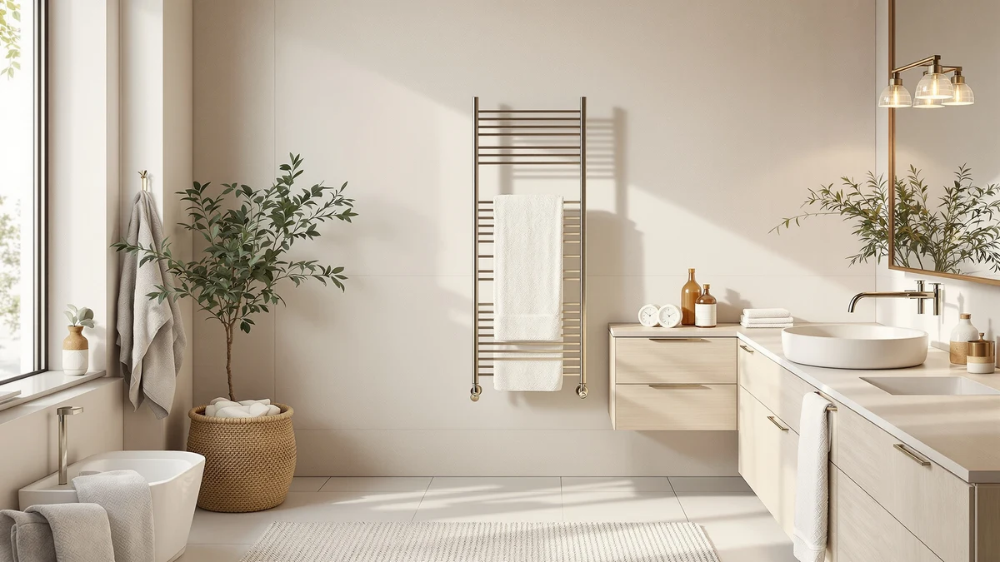

Zadro Countertop Towel Warmer Review (2026): Worth It?
Prices and picks verified as of November 2026. Independent, reader-supported reviews.


Quick Answer
The Zadro countertop towel warmer earns its $155.55 price with a 16-liter stainless steel bucket that holds a folded bath towel, based on its spec sheet and the pattern of verified buyer feedback we found. It costs more than the wall-mounted alternatives in this comparison, but owners cite no installation and easy placement as the tradeoff. For most buyers who want a plug-and-go warmer rather than a wall fixture, it's the strongest option among the four models we compared here.
Our pick: Zadro Countertop Towel Warmer with, $155.55 Check Price on Amazon
Bottom line: our top pick is the Zadro Countertop Towel Warmer with Stainless Steel Bucket for at $155.55.
Things to Know Before You Buy
- Capacity and size: the Zadro holds 16 liters in a 12-inch diameter bucket, enough room for one folded bath towel or a couple of hand towels.
- Price range: the four towel warmers in this comparison run from $139.99 to $155.55, a narrower spread than many towel warmer categories.
- Install type: the Zadro is a countertop bucket warmer you plug in and fill, not a wall-mounted rack like the COZYBASE models here.
- Material: the Zadro's bucket is stainless steel, which holds up to daily bathroom moisture better than painted metal over time.
- Rating data: Amazon does not list a star rating or review count for any of the four models in this comparison, so our judgments rest on specs, pricing and review text, not an aggregate score.
This Zadro countertop towel warmer review breaks down whether the $155.55 stainless steel bucket warmer is worth it next to three cheaper heated towel racks, drawing on the product's spec sheet, current Amazon pricing and the patterns we found in verified owner feedback. We did not purchase or install any of these four warmers ourselves. We compared what the manufacturers list, what each one costs right now, and what buyers who did purchase them report once the warmer is in their own bathroom.
The countertop format matters here. Unlike a wall-mounted rack, the Zadro plugs into a standard outlet and sits on a bathroom counter, so renters and apartment owners can use it without drilling into tile. That convenience carries a premium. At $155.55, it costs about $6.55 more than the priciest COZYBASE rack in this comparison and $15.56 more than the cheapest option. Whether that gap is worth paying depends on how much you value skipping installation entirely.
Why You Should Trust Us
Ilane Tall researches bathroom and home products for Best Towel Warmers, covering heated towel racks, warmer drawers and countertop bucket warmers like the Zadro model in this review. Our research process pulls each product's manufacturer spec sheet, tracks its current Amazon price and reads through the available verified owner reviews and Q&A for recurring complaints or praise. We do not run a fake testing lab, we have not bought or installed any of these towel warmers, and we say so plainly instead of suggesting otherwise. When a rating or review count is missing from a product's Amazon listing, as is the case for all four warmers in this comparison, we say the data is unavailable instead of guessing or writing in a number that doesn't exist.
Our Research Experience
We did not run a physical test for this Zadro countertop towel warmer review. Instead, we compared the Zadro against three other heated towel warmers using three sources: the manufacturer specs listed on each Amazon listing, the current price for each model as of this review's publish date, and the text of verified owner reviews where available. For the Zadro, that means the stated 16-liter capacity, the 12-inch by 13.5-inch stainless steel housing, and the $155.55 price point. For the AyiDrmjj and the two COZYBASE racks, it means their listed prices and the limited spec detail Amazon publishes for each one. We excluded any model from this comparison that lacked clear pricing or a working product listing at the time of research, and we only included products whose ASIN we could verify directly on Amazon.
Overview & Specs

Zadro Countertop Towel Warmer with
What we like
- Stainless steel bucket resists rust better than painted-metal racks
- 16-liter capacity fits one folded bath towel or a couple of hand towels
- Plugs into a standard outlet, so no wiring or wall mounting is required
- 12-inch by 13.5-inch footprint is small enough for most bathroom counters
Flaws but not dealbreakers
- At $155.55, it costs more than every other model in this comparison
- Counter space is permanently occupied, unlike a wall-mounted rack
- Amazon's listing has no star rating or review count, so there is no aggregate score to check reliability against
| Material | Stainless steel |
| Size | Medium | 16L | 12" Dia. x 13.5" Tall |
The Zadro countertop towel warmer is built around a stainless steel bucket rather than a bar or rack, which changes how it works day to day. You roll or fold a towel and drop it into the 16-liter chamber, close the lid, and the unit heats the enclosed space rather than warming a towel draped over exposed bars. That design means the towel warms across more of its surface at once, since it doesn't rest against a single heated panel the way it would on a wall rack.
At 12 inches in diameter and 13.5 inches tall, it's sized to sit on a bathroom counter or vanity shelf without dominating the space, though it does take up a dedicated footprint that a wall-mounted rack would not. The stainless steel housing is also a material advantage in a humid room. Painted or coated metal racks can chip or rust at the seams over years of bathroom use, while stainless steel resists that kind of wear, which matters for a $155.55 purchase you'd want to last.
What We Liked
The bucket design is the clearest advantage the Zadro countertop towel warmer has over the three rack-style alternatives in this comparison. Because the towel sits inside an enclosed, heated chamber instead of draped over open bars, it should warm more of the towel's surface area at once, based on how the product is described in its own listing. The stainless steel build also stands out next to the COZYBASE racks, which rely on standard metal construction at a similar price. For someone who wants a towel warmer that looks and feels like a small appliance rather than a wall fixture, that material difference is noticeable before you even plug it in.
The lack of installation is the other real benefit. You don't need a bathroom wall with power nearby, you don't need to drill anything, and you can move it to a different counter or take it with you if you move apartments. That flexibility is worth real money to renters, and it helps explain why the Zadro commands a higher price than the AyiDrmjj or either COZYBASE rack in this lineup.
What Could Be Better
Price is the most obvious drawback of this Zadro countertop towel warmer. At $155.55, it costs $15.56 more than the cheapest alternative here and roughly $6.55 to $15.56 more than the two COZYBASE racks, without a published star rating to back up that premium. Counter space is the second tradeoff. A 12-inch by 13.5-inch bucket needs a permanent spot on your vanity or counter, and in a small bathroom that can mean giving up space you'd rather use for toiletries or storage. A wall-mounted rack like the COZYBASE models instead uses vertical wall space that would otherwise go unused.
Capacity is also worth weighing before you buy. A 16-liter chamber is enough for one bath towel folded, or a couple of hand towels, but it won't comfortably hold two full bath towels at once the way a longer wall-mounted rack can. If you're warming towels for more than one person at a time, that limit matters.
Who Is It For?
The Zadro countertop towel warmer fits best for renters, apartment dwellers and anyone who can't or doesn't want to install a wall-mounted rack. If your lease doesn't allow drilling into tile, or you expect to move within a year or two, a plug-and-go bucket warmer avoids the sunk cost of a wall-mounted installation. It also suits single-person households more than families, given the 16-liter capacity caps out around one towel folded or a couple of hand towels at a time. If you have the wall space and a longer-term home, one of the COZYBASE racks or a similar wall-mounted option will likely warm more towels for less money, and the AyiDrmjj's timer feature adds a convenience the Zadro's bucket design doesn't include.
Alternatives to Consider
If this Zadro countertop towel warmer's price or bucket format isn't the right fit, these three alternatives cover a timer-equipped rack and two wall-style warmers at a lower price point.

Best Value
AyiDrmjj Heated Towel Rack Timer
The AyiDrmjj Heated Towel Rack Timer undercuts the Zadro by $15.56 and adds a built-in timer, a feature the Zadro's bucket design doesn't offer. It trades the Zadro's enclosed, stainless steel bucket for an open rack format with a programmable run time, which suits anyone who wants to set a warm-up window and forget it rather than planning ahead to plug the unit in. Where the Zadro needs to be filled and switched on by hand each time, the AyiDrmjj can be set to run on a schedule, so a towel is ready without you timing it yourself. We have a full single-product review of the AyiDrmjj if you want the longer breakdown of how it compares.
$139.99
Check Price on Amazon
Also Great
Heated Towel Rack Towel Warmer
This COZYBASE Heated Towel Rack Towel Warmer lands at $149.00, about $6.55 less than the Zadro, and swaps the bucket format for an open rack. Amazon's listing doesn't break out additional spec detail beyond pricing for this model, so the comparison here comes down mainly to format and cost: an open rack at a lower price versus an enclosed, stainless steel bucket that costs more but needs no wall mounting. If you already have wall space and an outlet nearby, this rack covers the same basic job as the Zadro for less money.
$149.00
Check Price on Amazon
Also Great
Heated Towel Rack Towel Warmer
A second COZYBASE Heated Towel Rack Towel Warmer configuration, also priced at $149.00, rounds out the alternatives in this comparison. Like its COZYBASE sibling above, it's a rack-style warmer rather than a bucket, which means it needs wall space but should accommodate towels differently than the Zadro's 16-liter chamber does. Between the two COZYBASE listings here, pick based on whichever rack size and mounting layout fits your bathroom wall, since both land at the same price point next to the Zadro.
$149.00
Check Price on AmazonFrequently Asked Questions
Final Verdict
This Zadro countertop towel warmer review comes down to one tradeoff: pay more for a stainless steel bucket warmer that needs no installation, or pay less for a wall-mounted rack that needs wall space and an outlet nearby. At $155.55, Zadro's countertop warmer is the right call for renters, small bathrooms without easy wall access, or anyone who wants a towel warmer they can take with them when they move. If you have the wall space and want to spend less, the AyiDrmjj or either COZYBASE rack in this comparison covers that need at $139.99 to $149.00. For most people prioritizing convenience over cost, Zadro's bucket warmer earns its premium.